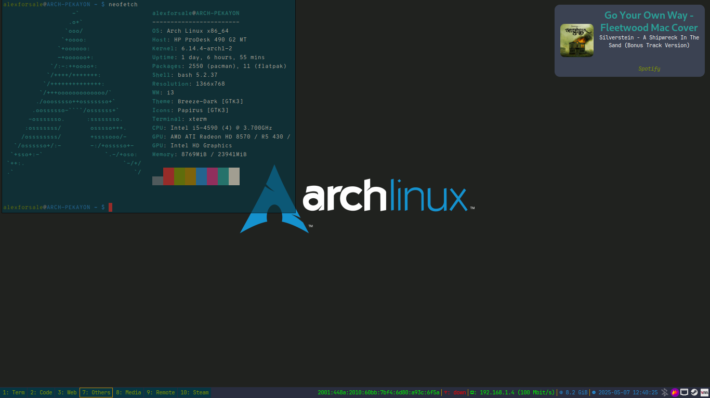

Dunstrc
Table of Contents
- Configuration File
- dunstrc
- Global Section
- Monitor
- Display notification on focused monitors.
- Geometry
- Maximum number of notification
- Progress bar
- Indicate hidden
- Transparency
- Separator height
- Padding
- Frame width and color
- Gap size
- Separator color
- Sort message by urgency
- Idle threshold
- Font
- Line height
- Markup
- Message format
- Alignments
- Age threshold
- Ellipsize
- Ignore newline
- Duplicates
- URL and action indicator
- Icons
- History
- Misc
- experimental
- Urgency
- Ignore transient in history
- Allow critical notification on fullscreen
- Global Section
- dunstrc
- Scripts
This is my personal dunst configuration files. Dunst is a lightweight and customizable notification daemon. It's very modular and easily to customize so I've been using this as a notification daemon in mostly all my window manager configuration. 
Configuration File
dunstrc
Global Section
Monitor
Which monitor should the notifications be displayed on.
[global] monitor = 0
Display notification on focused monitors.
Display notification on focused monitor. Possible modes are:
mouse: follow mouse pointerkeyboard: follow window with keyboard focusnone: don't follow anything
"keyboard" needs a window manager that exports the _NET_ACTIVE_WINDOW property. This should be the case for almost all modern window managers.
If this option is set to mouse or keyboard, the monitor option will be ignored.
follow = none
Geometry
### Geometry ### # dynamic width from 0 to 300 # width = (0, 300) # constant width of 300 width = (0, 300) # The maximum height of a single notification, excluding the frame. height = (0, 200) # Position the notification in the top right corner origin = top-right # Offset from the origin offset = (10, 10) # Scale factor. It is auto-detected if value is 0. scale = 0
Maximum number of notification
Maximum number of notification (0 means no limit)
notification_limit = 5
Progress bar
### Progress bar ### # Turn on the progess bar. It appears when a progress hint is passed with # for example dunstify -h int:value:12 progress_bar = true # Set the progress bar height. This includes the frame, so make sure # it's at least twice as big as the frame width. progress_bar_height = 5 # Set the frame width of the progress bar progress_bar_frame_width = 0 # Set the minimum width for the progress bar progress_bar_min_width = 0 # Set the maximum width for the progress bar progress_bar_max_width = 444 # Define which corners to round when drawing the progress bar. If progress_bar_corner_radius # is set to 0 this option will be ignored. progress_bar_corners = all # Corner radius for the progress bar. 0 disables rounded corners. progress_bar_corner_radius = 0 # Corner radius for the icon image. icon_corner_radius = 8
Indicate hidden
Show how many messages are currently hidden (because of notification_limit).
indicate_hidden = yes
Transparency
The transparency of the window. Range: [0; 100]. This option will only work if a compositing window manager is present (e.g. xcompmgr, compiz, etc.). (X11 only)
transparency = 0
Separator height
Draw a line of "separator_height" pixel height between two notifications. Set to 0 to disable. If gap_size is greater than 0, this setting will be ignored.
separator_height = 0
Padding
# Padding between text and separator. padding = 8 # Horizontal padding. horizontal_padding = 11 # Padding between text and icon. text_icon_padding = 0
Frame width and color
# Defines width in pixels of frame around the notification window. # Set to 0 to disable. frame_width = 0 # Defines color of the frame around the notification window. frame_color = "#e5e9f0"
Gap size
Size of gap to display between notifications - requires a compositor. If value is greater than 0, separator_height will be ignored and a border of size frame_width will be drawn around each notification instead. Click events on gaps do not currently propagate to applications below.
gap_size = 1
Separator color
Define a color for the separator. possible values are:
auto: dunst tries to find a color fitting to the background;foreground: use the same color as the foreground;frame: use the same color as the frame;
anything else will be interpreted as a X color.
separator_color = "#e5e9f0"
Sort message by urgency
sort = yes
Idle threshold
Don't remove messages, if the user is idle (no mouse or keyboard input) for longer than idle_threshold seconds. Set to 0 to disable. A client can set the 'transient' hint to bypass this. See the rules section for how to disable this if necessary
# idle_threshold = 120
Font
font = JetBrainsMonoNL Nerd Font Mono 8
Line height
# The spacing between lines. If the height is smaller than the # font height, it will get raised to the font height. line_height = 0
Markup
Possible values are:
full- Allow a small subset of html markup in notifications:
<b>bold</b><i>italic</i><s>strikethrough</s><u>underline</u>
For a complete reference see https://docs.gtk.org/Pango/pango_markup.html.
strip- This setting is provided for compatibility with some broken clients that send markup even though it's not enabled on the server. Dunst will try to strip the markup but the parsing is simplistic so using this option outside of matching rules for specific applications IS GREATLY DISCOURAGED.
no- Disable markup parsing, incoming notifications will be treated as plain text. Dunst will not advertise that it has the body-markup capability if this is set as a global setting.
It's important to note that markup inside the format option will be parsed regardless of what this is set to.
markup = full
Message format
The format of the message. Possible variables are:
- %a
- appname
- %s
- summary
- %b
- body
- %i
- iconname (including its path)
- %I
- iconname (without its path)
- %p
- progress value if set ([ 0%] to [ 100% ]) or nothing
- %n
- progress value if set without any extra characters
- %%
- Literal %
Markup is allowed
format = "<span size='x-large' font_desc='Cantarell,JetBrainsMonoNL Nerd Font Mono 10' weight='bold' foreground='#2aa198'>%s</span>\n<span foreground='#f9f9f9'>%b</span>\n<span foreground='#859900' font_style='italic' font_stretch='condensed'>%a</span>"
Alignments
# Alignment of message text. # Possible values are "left", "center" and "right". alignment = center # Vertical alignment of message text and icon. # Possible values are "top", "center" and "bottom". vertical_alignment = center
Age threshold
Show age of message if message is older than show_age_threshold seconds. Set to -1 to disable.
show_age_threshold = 60
Ellipsize
Specify where to make an ellipsis in long lines. Possible values are "start", "middle" and "end".
ellipsize = middle
Ignore newline
Ignore newlines '\n' in notifications.
ignore_newline = no
Duplicates
# Stack together notifications with the same content stack_duplicates = true # Hide the count of stacked notifications with the same content hide_duplicate_count = true
URL and action indicator
Display indicators for URLs (U) and actions (A).
show_indicators = yes
Icons
### Icons ### # Recursive icon lookup. You can set a single theme, instead of having to # define all lookup paths. enable_recursive_icon_lookup = true # Set icon theme (only used for recursive icon lookup) icon_theme = Papirus # You can also set multiple icon themes, with the leftmost one being used first. icon_theme = "breeze-dark, Papirus-Dark" # Align icons left/right/top/off icon_position = left # Scale small icons up to this size, set to 0 to disable. Helpful # for e.g. small files or high-dpi screens. In case of conflict, # max_icon_size takes precedence over this. min_icon_size = 32 # Scale larger icons down to this size, set to 0 to disable max_icon_size = 64 # Paths to default icons (only neccesary when not using recursive icon lookup) # icon_path = /usr/share/icons/gnome/16x16/status/:/usr/share/icons/gnome/16x16/devices/
History
### History ### # Should a notification popped up from history be sticky or timeout # as if it would normally do. sticky_history = yes # Maximum amount of notifications kept in history history_length = 20
Misc
### Misc/Advanced ### # dmenu path. #dmenu = /usr/bin/dmenu -p dunst: dmenu = rofi -dmenu # Browser for opening urls in context menu. browser = /usr/bin/xdg-open # Always run rule-defined scripts, even if the notification is suppressed always_run_script = true # Define the title of the windows spawned by dunst title = Dunst # Define the class of the windows spawned by dunst class = Dunst # Define the corner radius of the notification window # in pixel size. If the radius is 0, you have no rounded # corners. # The radius will be automatically lowered if it exceeds half of the # notification height to avoid clipping text and/or icons. corner_radius = 10 # Define which corners to round when drawing the window. If the corner radius # is set to 0 this option will be ignored. # # Comma-separated list of the corners. The accepted corner values are bottom-right, # bottom-left, top-right, top-left, top, bottom, left, right or all. corners = all # Ignore the dbus closeNotification message. # Useful to enforce the timeout set by dunst configuration. Without this # parameter, an application may close the notification sent before the # user defined timeout. ignore_dbusclose = false ### Wayland ### # These settings are Wayland-specific. They have no effect when using X11 # Uncomment this if you want to let notications appear under fullscreen # applications (default: overlay) # layer = top # Set this to true to use X11 output on Wayland. force_xwayland = false ### Legacy # Use the Xinerama extension instead of RandR for multi-monitor support. # This setting is provided for compatibility with older nVidia drivers that # do not support RandR and using it on systems that support RandR is highly # discouraged. # # By enabling this setting dunst will not be able to detect when a monitor # is connected or disconnected which might break follow mode if the screen # layout changes. force_xinerama = false ### mouse # Defines list of actions for each mouse event # Possible values are: # * none: Don't do anything. # * do_action: Invoke the action determined by the action_name rule. If there is no # such action, open the context menu. # * open_url: If the notification has exactly one url, open it. If there are multiple # ones, open the context menu. # * close_current: Close current notification. # * close_all: Close all notifications. # * context: Open context menu for the notification. # * context_all: Open context menu for all notifications. # These values can be strung together for each mouse event, and # will be executed in sequence. mouse_left_click = do_action, close_current mouse_middle_click = do_action, close_current mouse_right_click = close_current
experimental
# Experimental features that may or may not work correctly. Do not expect them # to have a consistent behaviour across releases. [experimental] # Calculate the dpi to use on a per-monitor basis. # If this setting is enabled the Xft.dpi value will be ignored and instead # dunst will attempt to calculate an appropriate dpi value for each monitor # using the resolution and physical size. This might be useful in setups # where there are multiple screens with very different dpi values. per_monitor_dpi = false
Urgency
[urgency_low] background = "#3b4252" foreground = "#4c566a" # Icon for notifications with normal urgency default_icon = dialog-information [urgency_normal] background = "#434c5e" foreground = "#e5e9f0" override_pause_level = 30 # Icon for notifications with normal urgency default_icon = dialog-information [urgency_critical] background = "#bf616a" foreground = "#eceff4" # Icon for notifications with critical urgency default_icon = dialog-warning
Ignore transient in history
[transient_history_ignore] match_transient = yes history_ignore = yes
Allow critical notification on fullscreen
[fullscreen_show_critical] msg_urgency = critical fullscreen = show
This is mostly the base configuration file, and each configuration in it will be replaced with the snippets in ~/.config/dunst/dunstrc.d/*.conf.
Scripts
dunst-backlight
# original script from https://wiki.archlinux.org/index.php/Dunst # <alexforsale@yahoo.com> # changeBrightness # Arbitrary but unique message tag msgTag="mybrightness" # Change the volume using alsa(might differ if you use pulseaudio) #amixer -c 0 set Master "$@" > /dev/null #pamixer --set-volume "${@}" > /dev/null brightnessctl set "${@}" > /dev/null # Query amixer for the current volume and whether or not the speaker is muted #volume="$(amixer -c 0 get Master | tail -1 | awk '{print $4}' | sed 's/[^0-9]*//g')" #mute="$(amixer -c 0 get Master | tail -1 | awk '{print $6}' | sed 's/[^a-z]*//g')" #volume="$(pamixer --get-volume-human)" #mute="$(pamixer --get-mute)" max="$(brightnessctl max)" current="$(brightnessctl get)" percentage="$(awk -v current=${current} -v max=${max} 'BEGIN { print ( (current / max) * 100 )}')" percentage="${percentage%.*}" # Show the brightness notification dunstify -a "changeBrightness" -u low -i audio-volume-high -h string:x-dunst-stack-tag:$msgTag \ -h int:value:"${percentage}" " Brightness: ${percentage}%" # Play the brightness changed sound canberra-gtk-play -i audio-volume-change -d "changeVolume"
dunst-volume
# original script from https://wiki.archlinux.org/index.php/Dunst # <alexforsale@yahoo.com> # changeVolume msgTag="myvolume" # args = -i % or -d % pamixer "${@}" > /dev/null volume="$(pamixer --get-volume)" mute="$(pamixer --get-mute)" if [ "${mute}" == "true" ]; then icon="audio-volume-muted" symbol="" elif [ "${mute}" == "false" ] && [ "${volume}" -gt 0 ] && [ "${volume}" -le 25 ]; then icon="audio-volume-low" symbol="" elif [ "${mute}" == "false" ] && [ "${volume}" -gt 25 ] && [ "${volume}" -le 75 ]; then icon="audio-volume-medium" symbol="" elif [ "${mute}" == "false" ] && [ "${volume}" -gt 75 ]; then icon="audio-volume-high" symbol="" fi if [[ $volume == 0 || "$mute" == "true" ]]; then dunstify -a "changeVolume" -u low -i "${icon}" -h string:x-dunst-stack-tag:$msgTag "${symbol} Volume muted" else dunstify -a "changeVolume" -u low -i "${icon}" -h string:x-dunst-stack-tag:$msgTag \ -h int:value:"$volume" "${symbol} Volume: ${volume}%" fi canberra-gtk-play -i audio-volume-change -d "changeVolume"